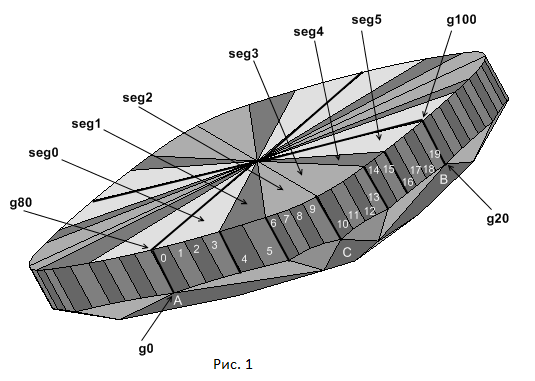
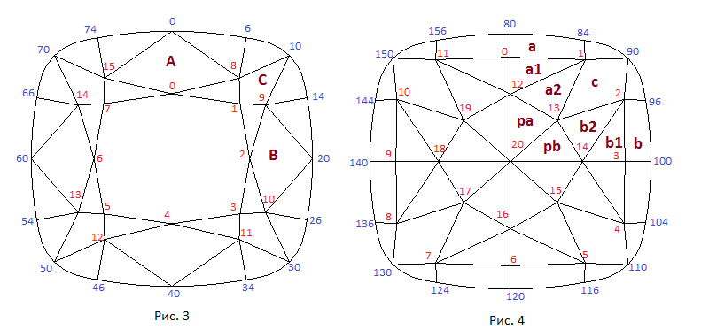
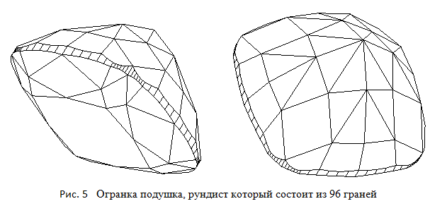

Создадим еще одну огранку c рундистом имеющим форму "подушки". В этой огранке расстановку вершин рундиста будем производить по способу показанному в главе 24. На павильоне многогранника можно увидеть очертания восьмиконечной звезды, образованной гранями, расходящимися от калетты и гранями, следующими за ними. В соответствии с рисунком павильона название огранке октаграмма . Заметим, что в геральдике октаграммой называется сдвоенный крест или восьмиконечная звезда. Истинной октаграмме в наибольшей степени соответствует павильон огранки при значении параметра удлинения lw равном 1.0.
По ссылке Octagram Cube Map можно увидеть разработанную в данной главе огранку Octagram отображенную при помощи кубических карт. Нажав на приведенной по ссылке странице кнопку Inverse можно увидеть огранку на черном фоне.
У огранки рундист разделен на 80 сегментов. Внешний вид такого разбиения рундиста огранки октаграмма показан на рисунке 1.
На рисунке 1 изображены только рундист и корона огранки, а павильон не показан для того, чтобы наиболее наглядным способом представить деление рундиста на сегменты. Для осуществления такого деления мы воспользуемся ранее рассмотренным методом, когда разбиение рундиста на части осуществляется одновременно с построением короны (глава 24). В рассматриваемой огранке количество граней рундиста равно 80, а не 64 как это было в большинстве предыдущих огранок. При таком выборе числа граней рундиста более наглядно выглядит его построение, когда узловые вершины рундиста, к которым подходят ребра короны, и узловые вершины рундиста, к которым подходят ребра павильона, разнесены по их положению в проекции на горизонтальную плоскость огранки. На рисунке 1 отчетливо видно это разнесение узловых вершин. На нем узловые вершины рундиста 6 и 84 не лежат на одной вертикали. То же самое относится и к вершинам рундиста 14 и 96. Можно, при желании, построить подобную огранку и с количеством граней рундиста равным 64. В следующей главе мы содадим огранку Princess3s_on_Cushion в которой рундист разбит на 64 грани, но со со стороны павильона в качестве узловых вершин выбраны иные вершины по сравнению с рассматриваемой огранкой Octagram и огранкой Maltese.
Подобным образом можно разделить рундисты огранок и на другое количество граней.
Например, с числом граней равным 96. Ограничением при таком способе разбиения рундиста служит то, что координаты всех узловых вершин
в горизонтальной плоскости мы можем изменять в определенных пределах. Например, вершину 84 рундиста (рисунок 2) мы не можем поместить
правее вершины рундиста 6, так как в этом случае вершина 84 "переезжает" через вершину 6.
Это ограничение обусловлено принятым форматом для построения огранок. Если мы все же хотим сделать так, чтобы вершина 84
находилась правее вершины 6, то для этого придется создать другую огранку - пронумеровать ее вершины соответствующим образом
и изменить массив index_cut в котором хранятся индексы всех полигонов составляющих модель огранки.
Нумерация вершин и обозначение граней модели короны показано на рисунке 3, а павильона - на рисунке 4.
var lw = 1.1; // Отношение длины огранки к ширине // Рундист var r = 0.05; // Толщина рундиста var rounnd_cir1 = 0.094; // "Roundness front" var rounnd_cir2 = 0.094; // "Roundness flank" var R3 = 0.210; // "Radius corner" // Следующие два параметра определяют расстановку вершин на рундисте со стороны короны var dr = 0.02; // Назначение dr и ratio приведено в главе в которой var ratio = 0.65; // расстановка вершин на рундисте типа "подушка" зависит от короны // Следующие два параметра определяют расстановку вершин на рундисте со стороны павильона var del_ang_gd_front = 10*DEGREE; // Задает положение границы между сегментами 0 и 1 var del_ang_gd_flank = 10*DEGREE; // Задает положение границы между сегментами 4 и 5 // Корона var beta = 32*DEGREE; // Угол короны var t = 0.60; // Размер площадки // Павильон var hp1 = 0.32; // Задает глубину калетты var hp2 = 0.16; // Задает глубину калетты при помощи изменения только граней примыкающих к калетте. var del_hp = 0.013; // Задает глубину вершин 12, 14, 16, 18 павильона var pav_ang_a = 62*DEGREE; // Угол грани a павильона var pav_ang_b = 53*DEGREE; // Угол грани b павильона var pav_ang_c = 41*DEGREE; // Угол грани c павильона var hA0 = 0.13; // Глубина центральных вершины на гранях a и b var hA1 = 0.107; // Глубина боковых вершины на гранях a, b и c var ang_rot_a2 = 12*DEGREE; // Определяет положение ребер между гранями a1, a2 и pa var ang_rot_b2 = 8*DEGREE; // Определяет положение ребер между гранями b1, b2 и pb
Расчет положения вершин короны для данной огранки осуществляется одновременно с расчетом положения вершин рундиста. Он был подробно рассмотрен в предыдущей главе.
Так как огранка симметрична относительно осей OXZ и OYZ, то для построения павильона достаточно найти координаты
его вершин только для одной четверти. Построение начнем с определения уравнения плоскостей,
в которых лежат грани a, b и c. Наклон этих плоскостей задают параметры огранки Pav. front angle, Pav. flank angle
и Pav. corner angle. В СДМ этим параметрам соответствуют поля pav_ang_a, pav_ang_b и pav_ang_c.
Азимут грани c павильона задается таким образом, чтобы он совпал с азимутом грани C короны.
Для граней a и b уравнения плоскостей рассчитываются при помощи функции Facet (или CreateInclinePlane).
Для нахождения положения вершин павильона 0 и 3 создадим две вертикальные (расположенные перпендикулярно плоскости OXY)
вспомогательные плоскости OYZ и OXZ. На глубине (- hA0 - r/2),
заданной параметром Pav. facet (ему соответствует в СДМ поле hA0),
проводим горизонтальную плоскость. Вершина павильона 0 определяется как точка пересечения плоскостей a, OYZ
и построенной горизонтальной плоскости. Вершина павильона 3 определяется подобным образом – как точка пересечения плоскостей b,
OXZ и этой же горизонтальной плоскости.
Для определения координат вершины 13 проводится горизонтальная плоскость на глубине задаваемой значением поля hp1 в СДМ.
Этому полю соответствует параметр hp1 – фактически он задает вертикальный размер верхней части павильона – как можно
видеть из рисунка 4 павильон условно можно разбить на две части.
Граница между двумя частями павильона проходит по его вершинам 12, 13 и 14. Затем проводится еще одна вспомогательная
вертикальная диагональная плоскость через центр огранки и вершину рундиста 90.
Пересечение этих двух вертикальных плоскостей с плоскостью c задает положение вершины 13.
Для определения координат вершин 1 и 3 павильона проводится горизонтальная плоскость,
чья глубина определяется параметром Pav. facet h1. Этому параметру в СДМ соответствует поле hA1.
Остается найти еще координаты вершин 12 и 14.
Из рассмотрения рис.4 очевидно, что плоскость, в которой лежит грань a2,
повернута на некоторый угол ang_rot_a2 вокруг оси проходящей через вершины 1 и 13.
То же самое справедливо и для плоскости b2 – она повернута на некоторый угол ang_rot_b2
вокруг оси проходящей через вершины 2 и 13. Меняя значения этих двух углов, мы тем самым меняем положение плоскостей,
в которых лежат грани a2 и b2. Заметим, что в процессе этих поворотов меняются не только азимуты
граней a2 и b2, но и их наклоны. Под значениями углов ang_rot_a2 и ang_rot_b2
будем понимать величины отклонений азимутов граней a2 и b2 от азимута грани c.
Зная величины азимутов этих граней и ранее найденные координаты вершин 1, 2 и 13 можно без труда
найти уравнения плоскостей, в которых лежат грани a2 и b2. Еще один параметр,
присутствующий в СДМ – del_hp1, задает насколько отличается глубина вершины 13 от глубины,
на которой расположены вершины 12 и 14. Положение вершины 12 определяется как точка пересечения
трех плоскостей – плоскости грани a2, плоскости OYZ и горизонтальной плоскости,
чья глубина расположения задается суммой значений величин hp1 и del_hp.
Подобным же образом определяется положение вершины 14 павильона. На листинге показана та часть
исходного текста функции VertexCalculation, которая относится к расчету координат вершин павильона в одном квадранте:
var kollet = new Point3D(); kollet[0] = 0; kollet[1] = 0; kollet[2] = -r/2 - hp1 - hp2; pavil[20] = new Point3D(kollet[0], kollet[1], kollet[2]); var OYZ = new Plane3D(); OYZ.CreatePlaneThreePoints(new Point3D(0,0,0), new Point3D(0,0,1), new Point3D(0,1,0)); var OXZ = new Plane3D(); OXZ.CreatePlaneThreePoints(new Point3D(0,0,0), new Point3D(0,0,1), new Point3D(1,0,0)); var XY = new Plane3D(); XY.CreatePlaneThreePoints(girdle[10], girdle[90], new Point3D(0,0,0)); // Находим уравнение плоскостей фасет a, b, c var a = Facet(-pav_ang_a, girdle[80], girdle[84], girdle[84]); var b = Facet(- pav_ang_b, girdle[96], girdle[100], girdle[96]); var c = Facet(- pav_ang_c, crown[8], crown[9], girdle[90]); /* // Другой способ расчета уравнений плоскостей фасет a, b, c var a = new Plane3D(); a.CreateInclinePlane(-pav_ang_a, girdle[80], girdle[84], girdle[84]); var b = new Plane3D(); b.CreateInclinePlane(-pav_ang_b, girdle[96], girdle[100], girdle[96]); var c = new Plane3D(); c.CreateInclinePlane(-pav_ang_c, crown[8], crown[9], girdle[90]); */ // Проводим горизонтальные плоскости на уровне точки hA0, hA1 var planeHorA0 = new Plane3D(); planeHorA0.CreatePlaneNormalVectorPoint(Z1, new Point3D(0, 0, -hA0 - r/2)); var planeHorA1 = new Plane3D(); planeHorA1.CreatePlaneNormalVectorPoint(Z1, new Point3D(0, 0, -hA1 - r/2)); pavil[0] = planeHorA0.IntersectionThreePlanes(a, OYZ); pavil[3] = planeHorA0.IntersectionThreePlanes(b, OXZ); // Горизонтальная плоскость на уровне фасет павильона var pl_hp1 = new Plane3D(); pl_hp1.CreatePlaneNormalVectorPoint(Z1, new Point3D(0, 0, - hp1 - r/2)); pavil[13] = pl_hp1.IntersectionThreePlanes(c, XY); pavil[1] = planeHorA1.IntersectionThreePlanes(a, c); pavil[2] = planeHorA1.IntersectionThreePlanes(b, c); var az_c = Math.atan2(c.Normal()[0], c.Normal()[1]); var vec_a2 = new Vector3D(Math.tan(Math.PI/2 + az_c - ang_rot_a2), 1.0, 0); var a2 = new Plane3D(); a2.CreatePlaneVectorTwoPoints(vec_a2, pavil[1], pavil[13]); var vec_b2 = new Vector3D(Math.tan(Math.PI/2 + az_c + ang_rot_b2), 1.0, 0); var b2 = new Plane3D(); b2.CreatePlaneVectorTwoPoints(vec_b2, pavil[2], pavil[13]); // pavil[12], pavil[14] var pl_del_hp = new Plane3D(); pl_del_hp.CreatePlaneNormalVectorPoint(Z1, new Point3D(0, 0, - hp1 - del_hp - r/2)); pavil[12] = pl_del_hp.IntersectionThreePlanes(a2, OYZ); pavil[14] = pl_del_hp.IntersectionThreePlanes(b2, OXZ); // Далее следует определение координат вершин павильона в других квадрантах // исходя из симметрии огранки и коррекция вершин рундиста со стороны павильона.
В данной главе было продемонстрировано, каким образом можно построить модель огранки, у которой часть узловых вершин рундиста, то есть тех вершин, к которым подходят ребра других частей огранки, могут не совпадать по месту со стороны короны и павильона. Такой метод построения огранок позволяет при желании "отвязать" форму павильона от формы короны. Еще одной особенностью огранки Octagram является то, что для разбиения рундиста на сегменты со стороны короны и со стороны павильона использовалась не одна, а две, совершенно различные, методики. На рисунке 5 показана модель еще одной огранки типа "подушка". У этой модели присутствует 96 граней рундиста. В углах огранки там, где рундист имеет максимальную кривизну, он разбит на 12 граней, что позволяет более точно аппроксимировать сопрягающую угловую окружность, на основе которой он создан.
По ссылке CushionSquare Cube Map можно увидеть еще одну огранку с рундистом типа "подушка" отображенную при помощи кубических карт.